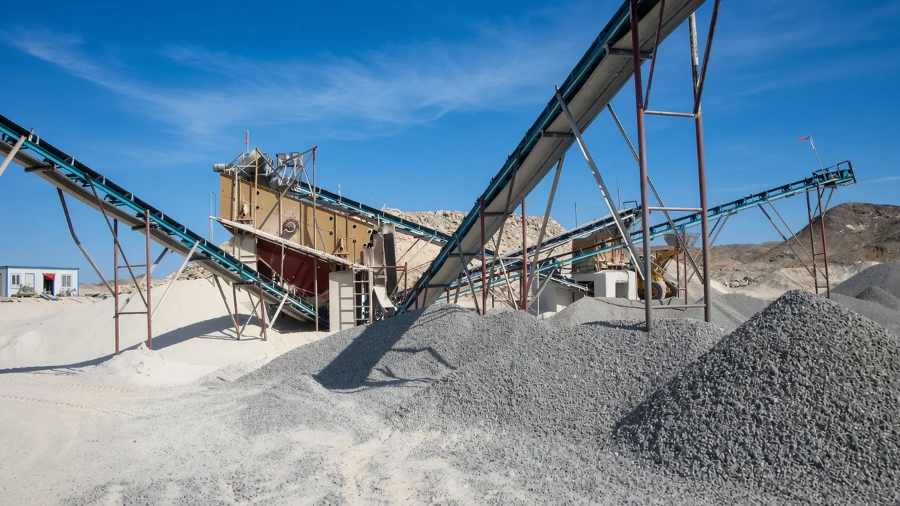

Operation And Maintenance Contractors
Sunshine has emerged as one of the prominent service providers for ‘Operation & Maintenance’ for different sectors. We are offering operation and maintenance (O&M) services largely for power crushing plants. With an aim to expand ourselves we have started providing a wide range of services specifically for Aggregates and production of M.Sand and Plastering sand.
We perform thorough analysis and research on O&M information related to development and implementation process, and deliver quality services. Being an integral service provider for operation and maintenance (O&M).
We operate and maintain 3-stage and 4-stage crushing plants, including jaw crushers, cone crushers, VSI crushers, and hydrocyclones and bucket classifiers.